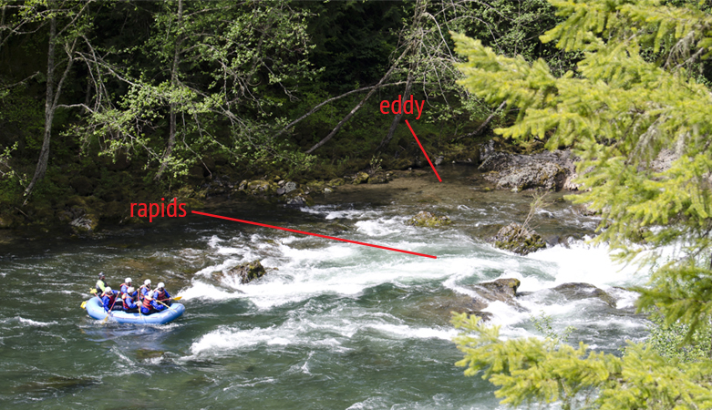
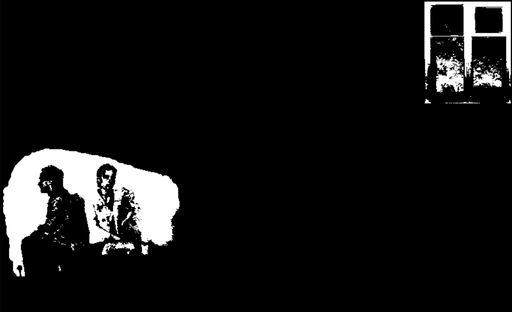
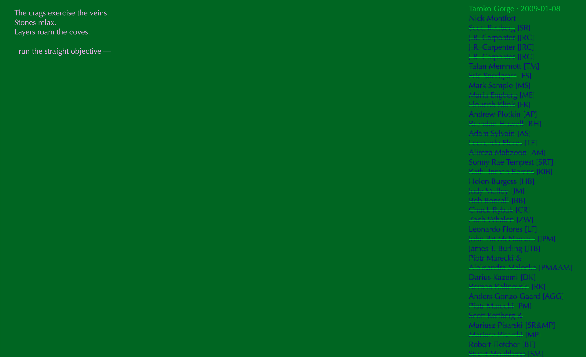
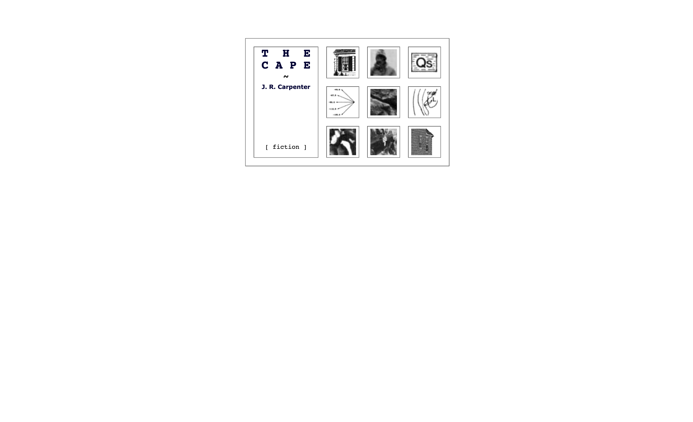
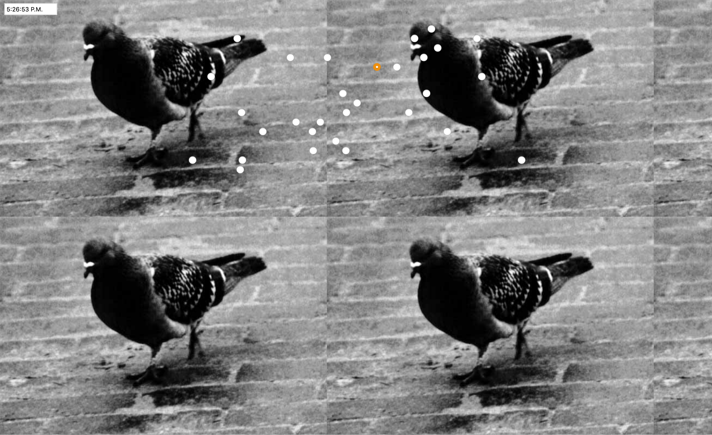

USELESS WEB WORKSHOP
"I evoke the term 'handmade web' to suggest slowness and smallness as forms of resistance."
- J. R. Carpenter
This workshop will attempt to introduce the basics of the web (html + css) through the use of templates, tampering, and copy-pasting with the goal of producing a website that evades the typical uses and values that are deemed "useful" in the web today. I think of the web today as a fast, flowing, military-industrial rapids lined with pockets of calm, resistant eddies.

(let's head for the eddy)
What else can we use the web for besides providing endless nourishment to the imperial platforms that we claim as home today?
How can we reclaim it as space that we feel capable of making in and for?
CONSIDERATIONS
Some questions to ask when making a website:
- who might my website harm?
- who is my website for?
- what data can be collected from my website?
- is my website useful to the military?
Consider a website as:
- a memory
- a poem
- a still life
- a self-portrait
- a quiet room
- a humidifier
The goal is to stay messy and free; there is time to refine later. What's important is that we explore the limits and nuances of making on the web.
Examples

Olia Lialina - My Boyfriend Came Back From the War



TO BEGIN
We'll need two (2) essential tools: a browser and a text-editor.
Then we'll download the template: (The Template)
.
. .
. . .
. . . .
And now we can begin!
TOOLKIT
Tools:
Beyond:
- w3schools
- Google Fonts
-
Laurel Schwulst
(My inspiration and has a wonderful resource page for her class)
Further Reading: